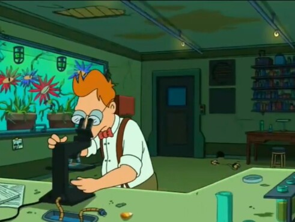
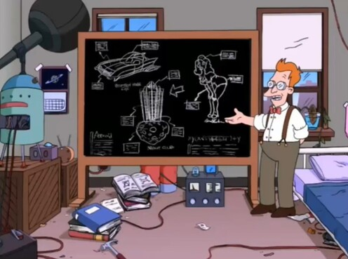

Historia de la empresa
Hubert J. Farnsworth nacio el 9 de abril de 1951 en el barrio mas nerd de nueva york, el laboratorio del infierno. Un niño precoz el joven hubert aprendio a leer cuando aun usaba pañales, a los 8 años y en poco se convirtio en un adolecente lleno barros.
Despues de 14 años de posgrado se establecio en la glamorosa vida de un cientifico. autos rapidos, clubes nocturnos, hermosas mujeres. el profesor lo diseño todo trabajando en su monoambiente.
 por 50 años trabajo en una robotica de gran renombre donde creo su primer robot capaz de calificar para un prestamo y ahora fundo planet express, una de las primeras logisticas del planeta tierra capaz de hacer envios interplanetarios